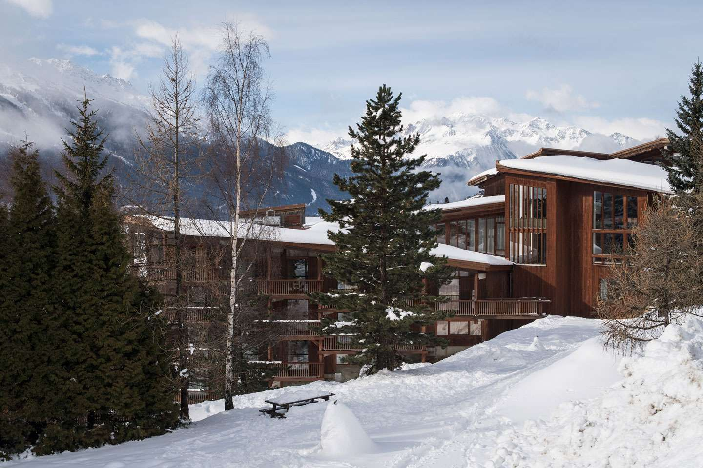

July 2 update: The September real-world date for the conference is still the default. Since the situation changes, we will do the next evaluation only in mid-August. A combination of a real-world meeting with some online talks is an option.
March 10 update: Due to the Coronavirus travel bans, the conference has been moved to September 13-19, 2020.
The registration is now closed and the list of participants has been fixed. It was done via Easychair. Please do not provide any payment data by phone/email - it is very likely a scam!
Background
Large-scale semantic processing and strong computer assistance of mathematics and science is our inevitable future. New combinations of AI and reasoning methods and tools deployed over large mathematical and scientific corpora will be instrumental to this task. The AITP conference is the forum for discussing how to get there as soon as possible, and the force driving the progress towards that.
Topics
- AI and big-data methods in theorem proving and mathematics
- Collaboration between automated and interactive theorem proving, in particular their AI/ML aspects
- Common-sense reasoning and reasoning in science
- Alignment and joint processing of formal, semi-formal, and informal libraries, Formal Abstracts
- Methods for large-scale computer understanding of mathematics and science
- Combinations of linguistic/learning-based and semantic/reasoning methods
- Formal verification of AI and machine learning algorithms, explainable AI
Sessions
There will be several focused sessions on AI for ATP, ITP and mathematics, modern AI and big-data methods, and several sessions with contributed talks. The focused sessions will be based on invited talks and discussion oriented.
Confirmed Participants/Speakers (TBC)
| João Araújo | Universidade Nova de Lisboa |
| Kevin Buzzard | Imperial College London |
| Michael R. Douglas* | Stony Brook University |
| Vlad Firoiu | DeepMind |
| Ben Goertzel | SingularityNET |
| Georges Gonthier | INRIA |
| Thomas C. Hales | University of Pittsburgh |
| John Harrison | Amazon |
| Sean Holden | University of Cambridge |
| Mikoláš Janota | University of Lisbon |
| Michael Kinyon | University of Denver |
| Joao Marques Silva | ANITI, University of Toulouse |
| David McAllester | Toyota Technological Institute at Chicago |
| Tomáš Mikolov | Facebook AI Research |
| Lawrence C. Paulson | University of Cambridge |
| Alison Pease | University of Dundee |
| J.D. Phillips | Northern Michigan University |
| Markus Rabe | Google Research |
| Stephan Schulz | DHBW Stuttgart |
| Daniel Selsam | Microsoft Research |
| David Stanovský | Charles University in Prague |
| Martin Suda | Czech Technical University in Prague |
| Christian Szegedy | Google Research |
| Tuyen Trung Truong | University of Oslo |
| Robert Veroff | University of New Mexico |
| Petr Vojtěchovský | University of Denver |
Invited talks (to be completed)
| François Charton and Guillaume Lample | Deep learning for symbolic mathematics |
| Michael Douglas | Formal/Symbolic/Numerical Computational Methods |
| Ben Goertzel | What Logic to Use for Hypothetical Scientific and Common-sense Inference? |
| Lawrence C. Paulson | TBA |
| Markus Rabe | TBA |
| Daniel Selsam | The IMO Grand Challenge |
Dates
- Submission deadline: December 3, 2019
- Author notification: January 10, 2020
- Conference registration:
January 21, 2020Extended: February 7, 2020 - Camera-ready versions: March 1, 2020
- Conference:
March 22-27September 13-19, 2020
Contributed talks
Informal proceedings
The (extended) abstracts of all the invited and contributed talks are now available online.
Program Committee
| Jasmin Christian Blanchette | INRIA Nancy |
| Ulrich Furbach | University of Koblenz |
| Tibault Gauthier | Czech Technical University in Prague |
| Thomas C. Hales (co-chair) | University of Pittsburgh |
| Sean Holden | University of Cambridge |
| Mikoláš Janota | University of Lisbon |
| Cezary Kaliszyk (co-chair) | University of Innsbruck |
| Michael Kinyon | University of Denver |
| Peter Koepke | University of Bonn |
| Michael Kohlhase | FAU Erlangen-Nürnberg |
| Konstantin Korovin | The University of Manchester |
| Ramana Kumar (co-chair) | DeepMind |
| Sarah Loos | Google Research |
| Stephan Schulz (co-chair) | DHBW Stuttgart |
| Geoff Sutcliffe | University of Miami |
| Josef Urban (co-chair) | Czech Technical University in Prague |
| Sarah Winkler | University of Innsbruck |
Program (preliminary)
September 13
| 19:30 | dinner |
September 14
| 14:00-16:30 (video) |
video of the whole session Welcome - Josef Urban Lawrence C. Paulson Machine Learning and the Formalisation of Mathematics: Research Challenges (55m) Yiannos Stathopoulos Developing a Concept-Oriented Search Engine for Isabelle Based on Natural Language : Technical Challenges Yutaka Nagashima LiFtEr: Language to Encode Induction Heuristics Minchao Wu Reinforcement Learning for Interactive Theorem Proving in HOL4 |
| 16:30-17:00 | coffee break |
| 17:00-19:00 (video) Chair: Christian Szegedy |
video of the whole session Thibault Gauthier Self-Learned Formula Synthesis in Set Theory Lasse Blaauwbroek Project Proposal: Relieving User Effort for the Auto Tactic in Coq with Machine Learning Zsolt Zombori Learning Complex Actions from Proofs in Theorem Proving Adrián Csiszárik Solving Arithmetic Problems on a Checkered Paper |
| 19:30 | dinner |
September 15
| 14:00-16:30 (video) Chair: Georges Gonthier |
video of the whole session François Charton Deep learning for symbolic mathematics (50m) Yuhuai Wu Neural Theorem Proving on Inequality Problems (25m) Stanislas Polu Generative Language Modeling for Automated Theorem Proving (25m) Miroslav Olšák Property Invariant Neural Network for Embedding Formulas in CNF (25m) Christian Szegedy Learning alignment between formal & informal mathematics (25m) |
| 16:30-17:00 | coffee break |
| 17:00-19:30 (video) Chair: David Stanovsky |
video of the whole session Daniel Selsam The IMO Grand Challenge (55m) Anton Lorenzen ForTheL for Type Theory Dennis Müller Learning Semantic Annotations for LaTeX Documents David McAllester: Isomorphism Revisited |
| 19:30 | dinner |
| 12:00-12:30 (video) |
Holger Hoos Ten theses on AI in Europe |
| 12:30-14:00 | lunch |
| 14:00-16:30 (videos linked to talks) Chair: Cezary Kaliszyk |
Zarathustra Goertzel Make E Smart Again (video) Pashootan Vaezipoor Learning Clause Deletion Heuristics with Reinforcement Learning (video) Zsolt Zombori Update on FLoP, a Reinforcement Learning based Theorem Prover (video) Filip Bártek Project Proposal: Machine Learning Good Symbol Precedences (video) Sarah Winkler Learning Strategy Design: First Lessons (video) |
| 16:30-17:00 | coffee break |
| 17:00-19:30 (video)Chair: Martin Suda |
video of the whole session Ben Goertzel What Logic to Use for Hypothetical Scientific and Common-sense Inference? (55m) Joao Araujo Algebra and ATP (25m) Wesley Fussner Computer-assisted identification of splittings in subvariety lattices Najwa Ghannoum Classification of Finite Semigroups and categories using Computational Methods David Stanovsky ATP in algebra: several observations from practice (10m) |
| 19:30 | dinner |
September 17
| 14:00-16:30 (videos linked to the talks) Chair: Mikolas Janota |
Michael Douglas Formal/Symbolic/Numerical Computational Methods (55m) (video) Aishik Ghosh Quantum Interference Measurement with Physics Aware Machine Learning at CERN (video) Sólrún Halla Einarsdóttir Towards Big Theory Exploration (video - starts at 24:00) Jesse Han Learning cubing heuristics for SAT from DRAT proofs (video) |
| 16:30-17:00 | coffee break |
| 17:00-19:30 Chair: Stephan Schulz |
video of the whole session Markus Rabe Learning Heuristics for Quantified Boolean Formulas through Deep Reinforcement Learning (35m) Martin Suda Deepire: First Experiments with Neural Guidance in Vampire Stanisław Purgał Learning theorem proving through self-play (25m) Michael Rawson Autoencoding TPTP (25m) Bartosz Piotrowski Learning to Advise an Equational Prover |
| 19:30 | dinner |
September 18
| 14:00-16:30 | Discussions in groups |
| 16:30-17:00 | coffee break |
| 17:00-19:00 | Discussions in groups |
September 19
| 14:00-16:30 | Excursion/Discussions in groups |
| 16:30-17:00 | coffee break |
| 17:00-19:00 | Excursion/Discussions in groups |
Picture from the conference
{kind=link}
Location, Prices and Further Local Information
The conference will take place from March 22 to March 27 September 13 to September 19 2020 in
the
CNRS Paul-Langevin Conference Center
located in
the mountain village of Aussois in Savoy. Dominated by the "Dent
Parrachée", one of the highest peaks of La Vanoise, Aussois is located
on a sunny plateau at 1500 m altitude, offering a magnificent panorama
of the surrounding mountains and a direct access to the downhill ski
slopes or cross country slopes in winter.
The total price for
accommodation, food and registration for the five days will be around
600 EUR.


Registration
The registration is now closed and the list of participants has been fixed. It was done via Easychair.
Please do not provide any payment data by phone/email - it is very likely a scam!
We have a limited block of rooms in the Aussois conference center and we have to confirm them by February 7th (after that reservation will be difficult or impossible). The pictures of the center and the rooms are here.
There are twin rooms, either with double (shared) or single occupancy. The price for a double/shared room for five nights (March 22-27 September 13-18) is 550 EUR and the price for single occupancy is 640 EUR. The price includes full board, coffee breaks, the lecture rooms and our bus Modane<->Aussois. Prices for accompanying persons are the same as for conference participants.
Receipts and invoices can be downloaded from EasyChair.
Arrival/Departure:
Aussois is less than 2h from the airports of Lyon, Geneve, Chambery, Annecy, Grenoble and Turin. There are trains and buses to Modane from these airports. Aussois is 8km from the Modane TGV station with direct trains from/to Paris. We will organize a bus for the participants from there to Aussois. Further buses to these airports / station can be found here and it is easy to get a taxi from Modane to Aussois and back.
The first meal is dinner on March 22nd September 13 and the last meal is lunch on Friday March 27th September 18 . There will be a full morning session on Friday. The planned departure of our bus from Modane to Aussois is at around 19:15 pm on Sunday, March 22 September 13 . The bus will wait for the TGV train from Paris arriving to Modane at 18:47. The train starts at 14:38 in Paris Gare de Lyon, and it also stops in Lyon-St Exupery at 16:37 and in Chambery-Challes-E at 17:44. The distance from Modane to Aussois is 8km and there are taxis and alternative buses.
We have not yet set the time for the departure of the bus after lunch on March 27 September 18 . This will be optimized based on your departure flights during the conference (but taking taxi back to Modane is easy). It may be possible to stay in the center (as normal tourists) also on Saturday/Sunday (March 28-29 September 19-20) if you are interested in more skiing enjoying the Alps some more. Either arrange this with the center yourself or let us know and we will ask the center about the availability.
If you registered, please fill in this Google form to indicate if you plan to take our bus to Modane, your food preferences, whom you want to share a room with, if you plan to stay until Saturday/Sunday, etc.
Ski Rental and Passes (data from 2018)
Skiing equipment could be rented at the center for 18.70 € per day or 80.70 € for the week. A ski pass was 29 € per day or 26 € for 4 consecutive hours or 116 € for 4 days or 129 € for 5 days.